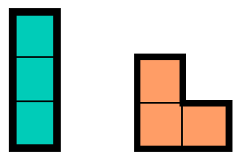

Structure of Argument
1 Introduction and history
How do you convince yourself that something is true? How do you prove a point? After cultivating a healthy skepticism, how do you find belief in facts? Reasoning is Believing.
1.1 Historical Approach – Aristotle’s Syllogisms
Aristotle introduced syllogisms for natural deduction in propositional logic. Here’s an example.
All cats are mammals. Felix is a cat. Therefore Felix is a mammal.
- Is the logic correct as it stands?
- Change the second sentence to assert that Felix is not a cat. Is the syllogism now correct? Can it be corrected?
- Instead, change the word “mammal” to “reptile” throughout. Is the logic correct?
- Some “cats” may be jazz musicians. Some “cats” may be construction vehicles. Does this affect the logic of the argument?
Lessons to Understand
Aristotelean logic and all higher logic separates syntax (form, language) from semantics (meaning and truth).
Correctness of form can be seen in the syntax. Some forms are correct (All A are B, x is an A \(\vdash\) x is B), while other forms (All A are B, x is B, \(\vdash\) x is A) are fallacies. Logical arguments which are correct in form are called sound.
Sound logic from false premises is still wrong. To be right, you must be sure of your premises.
1.2 The Syntax-Semantics Distinction – practice
Some cats can run 200 km per hour. In the song Mr. Pinstripe Suit by Big Bad Voodoo Daddy, Mr. Pinstripe Suit is a cat. Therefore Mr. Pinstripe Suit can run 200 km per hour.
There’s a lot wrong with this logic.
The conclusion is false. Is this a syntax or semantics problem?
The premise (200 km/h) is false. It should be 100 km/h. Is this a syntax or semantics problem?
The word “cat” is being used with two meanings. This is called equivocation. Is it a syntactic or semantic problem?
The argument form is wrong, regardless of the meaning of its words. Why? Is this a syntax or semantics problem?
2 Natural Deduction – Structure of Valid Argument
2.1 The language of logic
The language of modern logic combines …
- Basic Assertions which can be true or false
- \(3 \in \{3, 4, 5\}\) (true)
- \(3 \in (3,6)\) (false)
- \(y = x^2\) (depends on x and y)
- \(n>5\) (depends on n)
- \(P\), \(Q\), \(R\) (abstract placeholders for sentences)
- Connectives
- And \(\land\)
- as in $P $ and $ Q$
- as in $3 (3, 6) x< y $
- Or \(\lor\)
- as in \(P \lor Q\)
- as in \(3 \in (3, 6)\) or $ x< y $
- Not \(\neg\)
- as in $ x =y $, usually written \(x \neq y\)
- as in \(\neg P\)
- Implies \(\to\) (aka “if … then …”)
- as in “If \(x > 4\) then \(x>0\).” (sounds true!)
- as in “If \(n\) is prime then \(n\) is odd” (sounds false.)
- Quantifiers
- For all \(\forall\). Makes a universal statement.
- There exists \(\exists\). Makes an existential statement.
- “The” or “The only” \(\iota\) (but not in this course)
- Logical Constants
- The value “True”: \(\top\) or \(T\)
- The value “False”: \(\bot\) or \(F\)
- Not to be misused “\(P = \top\)” or “\(P = \bot\)”. To assert that \(P\) is true or false, just assert “\(P\)” or “\(\neg P\)”.
2.2 Truth value and Proof Theory are happily married
Each operator – “and”, “or”, “if…then”, “not”, and others (xor, xnor, nand, etc) needs to be clarified once and for all for its meaning. In this section we discuss two kinds of “meaning” that we attribute to logical operators
2.2.1 Truth-value meaning
Based on the truth or falsity of \(P\) and of \(Q\), when will the logical combination “\(P \to Q\)” (or other operators) be true? The answer to this question, including each possibility for \(P\) and \(Q\), is the truth table for the operator. The meaning of \(\to\) is baked into the rule for whether \(P \to Q\) is true. The same applies to the quantifies: If you know whether \(P(x)\) is true or false, for every possible \(x\), then you can deduce whether \(\forall x \enspace P(x)\) is true. Knowing how \(\forall x\) transforms truth values is one way to know what \(\forall x\) means.
2.2.2 Proof-theoretical meaning
What is the correct argument form to justify a statement like \(P \to Q\) (or \(\forall x \enspace P(X)\), \(P \land Q\), \(P \lor Q\) etc.) Conversely, is such a statement is given as a premise or as an intermediate conclusion, what sorts of argument structures does it support? The answers to these questions form the proof theoretical meaning of the operation.
Wittgenstein’s (later life) theory of meaning claims that the meaning of a word is invested not in some clear referent in reality, but in its habits of use. For example, if you know exactly when “Thank you” is appropriate to say, you know what it means. Proof-theoretical meaning is a usage-based theory of the meaning of a statement, because it is concerned with when and under what conditions a statement can be inserted in a proof, instead of its reference to reality or truth.
In principle, either single approach is a sufficient theory of meaning, but a student should see both perspectives.
2.3 Understanding “and”
2.3.1 In a Truth Table
The first way to explain “and” is to say generically exactly when “\(P\) and \(Q\)” would be true. This is done using a truth table. The truth table records that \(P \land Q\) gets to be True only when both parts are true.
| P | Q | \(P \land Q\) |
|---|---|---|
| T | T | T |
| T | F | F |
| F | T | F |
| F | F | F |
2.3.2 In Proof Theory
Another way to explain “and” is to prescribe how “\(P \land Q\)” functions as an input or an output of a logical argument. In other words, how does \(P \land Q\) function as as premise, and what argument form can produce \(P \land Q\) as a conclusion?
2.3.2.1 And-introduction
To justify “\(P\) and \(Q\),” simply justify \(P\), then justify \(Q\). Once both are justified, “\(P\) and \(Q\)” may be deduced: \[\frac{P , Q}{\therefore P \land Q}\]
2.3.2.2 And-elimination
In reverse, if “\(P \land Q\)” is known, one may conclude the parts separately. \[\frac{P \land Q}{\therefore P} \hspace{1in} \frac{P \land Q}{\therefore Q}\]
Here we’re introducing the fraction syntax for abstract deduction rules. The top of the fraction represent premises, or more precisely portions of the argument “so far”. The bottom of the fraction represents the sound conclusion which can be be drawn.
We don’t think of these forms as analogous to real fractions, and the analogy with division is not much use.
2.3.3 Notes
Notice that an informal “and” is used in the descriptions of the interpretation of the symbol “\(\land\)”. Foundational logic cannot build logical meaning from nothing. There is always a pre-theoretical, more intuitive logic operating before the theory can develop. Logical foundational work always appears circular or observational rather than cleanly creative. You can waste a lot of effort trying to see around this limitation. (I speak from experience.)
Normally, asserting “A and B” together also connotes a relatedness of ideas. This is why “It’s snowing and I’m cold” sounds better than “It’s snowing and I’m hungry.” Strictly logically speaking, no relationship between \(P\) and \(Q\) is required or implied, only that both \(P\) and \(Q\) are true.
2.4 Understanding “if … then”
2.4.1 Activity: Decide whether each implication sounds true or false. Explain why.
Read each statement. Decide whether it is true or false. Explain your decision.
- If it’s raining, then I’m carrying an open umbrella.
- If I’m carrying an open umbrella, then it’s raining,
- If Dr. Howald’s favorite number is divisible by \(4\), then it’s even.
- It’s Friday if you want it to be!
- If \(1+1=2\) then cats are mammals.
- If \(x\) is an element of the empty set, then \(x\) is negative.
- If \(x \geq 0\) then \(x\) is not an element of the empty set.
To consider: What does the correctness of \(P \to Q\) depend on? Surely it depends on whether \(P\) and \(Q\) are true or false. Does it furthermore depend on their relatedness, as in 5? On a hypothetical world where \(P\) was different, as in 4? On the possibility of \(P\), as in 6? Is it even possible to make a truth table for \(P \to Q\)?
2.4.2 In a Truth Table
The truth table for “implies” is challenging and should be established by public debate, not by fiat. This is the result of our classroom discussion. It is the standard interpretation of \(P \to Q\).
| \(P\) | \(Q\) | \(P \to Q\) |
|---|---|---|
| T | T | T |
| T | F | F |
| F | T | T |
| F | F | T |
What’s radical here is the commitment that the truth value of \(P \to Q\) should depend only on the plain truth or falsehood of \(P\) and \(Q\) individually, not on any interrelationship between them, and not on any hypothetical “if \(P\) were different.” This makes the mathematical implication \(P \to Q\) a bit different from the natural English implication.
Note: If \(Q\) is known true, then \(P\to Q\) must be true, regardless of the status of \(P\) or any relationship between them. Less obviously, if \(P\) is definitely false, then \(P \to Q\) must be true. Thus, any statement of the form “If [falsehood] then [anything]” is affirmed. We can interpret this as mathematics’ wholesale rejection of hypothetical logic.
2.4.3 In Proof Theory
Suppose you want to justify the statement “If \(P\) then \(Q\).” The most natural approach is to assume \(P\), then deduce \(Q\). This is often called direct proof. This proof structure encapsulates the meaning of \(\to\).
2.4.3.1 Implication-introduction (“direct proof”)
If, having assumed \(P\), you can prove \(Q\), you may conclude “if \(P\) then \(Q\)”: \[\frac{\begin{matrix}[\text{Assume } P]\\ Q\end{matrix}}{\therefore P \to Q}\]
Notice how strange such a proof is: \(P\) is not known true, and the act of assuming \(P\) is not warranted by any premises or evidence. The proof from the assumption of \(P\) to the conclusion of \(Q\) is provisional, hypothetical, a house of cards. But the conclusion \(P \to Q\) is known factually and absolutely. Sometimes we say that the assumption of \(P\) has been “discharged” by this step, placing the proof once again on a solid footing.
An alternative is to argue that if \(Q\) is not true, then neither is \(P\). This is called proof by contrapositive. It is based on the fact that “\(P \to Q\)” and “\(\neg Q \to \neg P\)” are interchangeable.
2.4.3.2 Implication-introduction (“proof by contrapositive”)
If, having assumed not \(Q\), you prove not \(P\), you may conclude “if \(P\) then \(Q\)”: \[\frac{\begin{matrix}[\text{Assume } \neg Q]\\ \neg P\end{matrix}}{\therefore P \to Q}\]
As before, most of the argument depends unsteadily on an unproven assumption \((\neg Q)\), but the final step discharges the assumption and results in something valid and certain.
Next we need to observe how an implication \(P \to Q\) could be used as a premise:
2.4.3.3 Implication-elimination (“Modus Ponens”)
Knowing both \(P\) and \(P \to Q\), you may conclude \(Q\).
\[\frac{P, P \to Q}{\therefore Q}\]
The ability to conclude \(Q\), given \(P\), is the essential meaning of “\(P \to Q\)” after all!
2.4.3.4 Implication-elimination (“Modus Tollens”)
Knowing \(P \to Q\), if \(Q\) is false, then \(P\) must be false.
\[\frac{\neg Q, P \to Q}{\therefore \neg P}\]
Again this is based on swapping “If \(P\) then \(Q\)” with “If not \(Q\) then not \(P\)”, which is the same.
2.4.3.5 Example 1 – divisibility
- If a number is divisible by \(4\), then it is even.
proof: Let \(x\) be a number. Assume that \(x\) is divisible by \(4\). Then \(x=4n\) for some other integer \(n\). Then \(x = 2*(2n)\). Since \(x\) is the double of an integer (namely \(2n\)), \(x\) is even.
Discussion: - The line “Let \(x\) be a number” is a way of making a argument about all numbers by using a generic singular number \(x\). This is sometimes called an “arbitrary particular.” In natural English, this is often accomplished with the pronoun “one” representing an arbitrary but singular person: “One should mind one’s manners”. This step introduces a brief context in which “\(x\)” represents one fixed but unspecified thing. Any statements about \(x\) occurring in this context refer to the same \(x\).
The assumption is made in the second sentence. Often it could be combined with the first: “Let \(x\) be a number divisible by \(4\).” Technically, the introduction of \(x\) and the assumption about it are two distinct logical acts.
We know a lot we didn’t say about even numbers, but we used only the most basic, direct interpretation of being even – being equal to twice some integer. This prevents confusion and streamlines the proof. Because every step in a logical proof is asserted with 100% certainty, we don’t need redundant reasoning. We want it simple and clean.
The conclusion (\(Q\)) is the last sentence. It does not appear out of nowhere but is deduced via sound argument.
The final implication-introduction needed is left unsaid, merely implied by the argument form. This is extremely common. Among regular humans, nobody says “Now we do implication introduction…” or “by the principle of direct proof…” or anything like that. That only happens within formal proof systems.
This argument also has an implied universality and a hidden universal introduction. We’ll get to that later.
2.4.3.6 Example 2, positive solutions
Prove that if \(x^4 = 3x-1\), then \(x\) is positive.
(This equation does have roots but they’re hard to find.)
proof: Suppose \(x\) is not positive. If it’s \(0\), then \(x^4 = 0\) but \(3x-1 = -1\), so they are not equal. If \(x\) is negative, then \(x^4\) is positive but \(3x-1\) is negative, so they are not equal. Either way, they are not equal.
Discussion:
- Here \(x\) is introduced (fixing its value and creating its context) and subjected to an assumption (not positive) in the first line.
- This also illustrates a proof by cases, which we’ll get to formally soon enough. If \(x\) is not positive there are two alternatives.
- Again the implication-introduction is implied but not said. The structure of the proof (contrapositive) is not obvious and needs to be noticed by the reader. It can be signaled “we prove by contrapositive” but this is not common in serious work.
- This is a proof by contrapositive, not by contradiction. They are easily confused but distinct structures.
2.4.3.7 Example 3 – Algebra is logic
Solve the equation \(\sqrt{x+6} = x\).
The first lesson in this problem is that algebraic manipulation is logical argument. Every algebraic step is a deduction. We lay out the steps without comment:
\[\begin{align*} \sqrt{x+6} &= x\\ x+6 &= x^2\\ -x^2+x+6 &= 0\\ x^2-x-6 &= 0\\ (x-3)(x+2) &=0 \\ x=3 \text{ or } x&=-2\\ \end{align*} \]
- Should it be “or” or “and” in the last line?
- If this is read as a series of logical deductions, each from the previous, is each of them sound? Especially consider the last step.
- Are both solutions valid?
- Is there an error in the proof? What is its (unwritten) conclusion?
2.4.3.8 Notes
When we assert \(P \to Q\), the suggestion that \(P\) causes \(Q\) or is at least related is so strong it’s hard to overcome, but it is not required. We can sometimes affirm \(P \to Q\) even when \(P\) and \(Q\) are unrelated, for example if we unequivocally know \(Q\). When \(Q\) causes \(P\), the “reverse cause” implication \(P \to Q\) may still be true, as in the idiom “where there’s smoke, there’s fire.” (Smoke implies fire, but fire causes smoke.)
How does “If P then Q” relate to the statement “Q or not P”? Are they the same?
How does “If P then Q” relate to the statement “If Q then P”? Are they the same?
How does “If \(P\) then \(Q\)” relate to the statement “Because \(P\), \(Q\)”? Are they the same?
2.5 Understanding “or”
2.5.1 In a Truth Table
| P | Q | \(P \lor Q\) |
|---|---|---|
| T | T | T |
| T | F | T |
| F | T | T |
| F | F | F |
Notice that “or” includes the case of “and”. The subtext “…or both” is always entailed. This interpretation is “inclusive or”. The alternative is “exclusive or”, usually written xor or \(\oplus\). Since “or” is inclusive by default, we never say “and/or” in mathematics, because the “and” is superfluous.
Natural English uses “or” in several senses: Inclusively (“Milk or sugar?”), exclusively (“Your money or your life!”, and to request a choice (“Coffee or tea?”). It’s a constant source of ambiguity and confusion. Natural language is messy, English especially so.
2.5.2 In Proof Theory
2.5.2.1 Or-introduction
Proving \(P \lor Q\), is sometimes the silly act of weakening a statement by adding an irrelevant alternative:
\[\frac{P}{\therefore P \lor Q} \hspace{1in} \frac{Q}{\therefore P \lor Q} \]
For example: “I know x = 5. Therefore \(x=\pm 5\) This argument form is rare because it’s rarely useful!
More substantially, interpreting \(P \lor Q\) as \(\neg P \to Q\) or \(\neg Q \to P\) yields a more interesting proof of \(P \lor Q\):
\[ \frac{\begin{matrix}[\text{Assume } \neg P]\\ Q\end{matrix}}{\therefore P \lor Q} \]
Alternatively:
\[ \frac{\begin{matrix}[\text{Assume } \neg Q]\\ P\end{matrix}}{\therefore P \lor Q} \]
Notice that either of these argument forms is enough to support the conclusion of “\(P\) or \(Q\)”. There is no need to do both.
2.5.2.2 Or-elimination (Proof by cases)
Knowing “\(P\) or \(Q\)” is awkward, because we don’t know which is true. But if both cases lead to the same conclusion, we needn’t care:
\[ \frac{P \lor Q\,\, \begin{matrix} [\text{Assume } P] \\ R \end{matrix}\,\, \begin{matrix} [\text{Assume } Q] \\ R \end{matrix} } {\therefore R} \]
This is called “proof by cases.”
Example: When solving a quadratic, we often move from, say, \(x^2-3x+2=0\) to factored form \((x-2)(x-1)=0\), to the conclusion \(x=2\) or \(x=1\). The last step can be understood as or-introduction in the following sense. Knowing \((x-2)(x-1)=0\), we assume \(x \neq 2\). Then \(x-2\) is not zero, so we may divide by it: \(x-1 = \frac{0}{x-2} = 0\). It follows that \(x=1\). We have proven \(x=1\) under the (unjustified) assumption \(x \neq 2\), and we conclude \(x=2\) or \(x=1\).
Example: For every real number \(x\), we have \(x^2 \geq 0\). Let \(x\) be a real number. Either \(x > 0\) or \(x=0\) or \(x < 0\). If \(x > 0\) then we may multiply both sides by \(x\) without changing the sign of the inequality, and \(x^2 > 0\). If \(x<0\) then we may multiply both sides by \(x\), but we change the side of the inequality, and again \(x^2>0\). If \(x=0\) then certainly \(x^2 \geq 0\). In all cases we have \(x^2 \geq 0\).
Example: For any integer \(n\), \(n^2 + n\) is even. If \(n\) is even, then so is \(n^2\) and \(n^2+n\) is the sum of two even numbers, so even. If \(n\) is odd, then so is \(n^2\), and \(n^2+n\) is the sum of two odd numbers, so even. Thus \(n^2+n\) is always even.
Example: For any integer \(n\), \(n^2-3n+2 \geq 0\). The factorization \(n^2-3n+2 = (n-1)(n-2)\) is helpful, depending on \(n\). If \(n=1\) or \(n=2\), the function is \(0\). If \(n>2\), we have a product of two positives. If \(n<1\), we have a product of two negative. Since \(n=1\) or \(n=2\) or \(n>2\) or \(n<1\), we conclude that \(n^2-3n+2\) is always \(\geq 0\).
2.5.3 Exercises – Identify the argument form
What argument form is used in each case? Is the argument logically correct?
“If what you say is true, I can’t forgive you. If it’s a lie, you’re a liar and I can’t trust you. Either way, we’re through!”
“Well, technically, I said I would have water or tea with dinner. And I had water. So that was true.”
“Cats make me allergic, but Fluffy here has no effect on me! I conclude that your beloved pet is not, after all, a cat!”
By not providing a guest bathroom towel, I have left you high and dry, so to speak. Therefore you are dry and don’t need a towel. You’re welcome.
Let \(x\) be a positive number. Then \(x>0\). Multiplying both sides of this inequality by \(x\) does not change the direction of the inequality, because \(x\) is positive. So \(x^2 > 0\). We conclude: If \(x\) is positive, then so is \(x^2\).
2.6 Understanding “not”
2.6.1 In a Truth Table
The truth table is a breeze:
| \(P\) | \(\neg P\) |
|---|---|
| T | F |
| F | T |
2.6.2 In Proof Theory
The proof theory is a little more subtle. How do we prove that \(P\) is false? Typically by showing that if \(P\) were true it would lead to logical disaster, usually represented as a proved falsehood (“\(\bot\)”). The technique is called proof by contradiction:
Suppose \(x\) were both positive and negative. Then \(x > 0\) and \(x < 0\). By transitivity \(0 < x < 0\), so \(0 < 0\), and therefore \(0\) is not equal to itself. This is absurd so \(x\) cannot be both positive and negative.
Formally: \[\frac{ \begin{matrix} [\text{Assume } P]\\ \bot \end{matrix} }{\neg P} \,\,\text{ and similarly } \,\, \frac{ \begin{matrix} [\text{Assume } \neg P]\\ \bot \end{matrix} }{P} \]
On the other hand, how do we use \(\neg P\) as a premise? Sometimes we have an implication of the form \(R \to P\), so Modus Tolens is one way to proceed. Sometimes we also have a proof of \(P\), so we proceed to a contradiction:
\[\frac{P, \neg P}{\bot}\]
It may seem silly to imagine that both \(P\) and \(\neg P\) can be proven. But inside the context of another assumption (for contradiction, usually), it’s quite common.
2.6.3 Examples
Proposition: The square root of \(2\) is irrational.
proof: Assume \(\sqrt{2}\) is rational. Then \(\sqrt{2}\) can be written as a fraction \(\sqrt{2} = \frac{a}{b}\), in lowest terms, where \(a\) and \(b\) are both positive integers. It follows that \(2 = \frac{a^2}{b^2}\), so \(2b^2 = a^2\). It follows that \(a^2\) is even, so \(a\) is even, so \(a^2\) is divisible by \(4\), so \(b^2\) is even, so \(b\) is even, so \(\frac{a}{b}\) is not in lowest terms after all. This is a contradiction. We conclude \(\sqrt{2}\) is irrational.
Notes:
- The contradiction \(\bot\) arises from something being proved true and false. What statement was proved true and false?
- The contradiction is used for a basic not-introduction. Where in the proof does the proof by contradiction commence and how does it end?
- Much is claimed about evenness. Why is each assertion true?
- The moment of contradiction is a turning point in the proof. It needs to be marked in some way. Above, we say directly “This is a contradiction.” Often, authors mark a contradiction with various symbols, including arrow-collision: \(\Rightarrow \Leftarrow\) or \(\rightarrow \leftarrow\), bot/falsum symbol \(\bot\), a lightning bolt ↯ or simply an “X.”
Proposition: There are infinitely many prime numbers.
proof: Suppose there were only a finitely many prime numbers. Then it would be possible to multiply them all, producing a number \(N\) divisible by every prime number. Then \(N+1\) would be larger than every prime number, but not divisible by any prime number. The prime factorization of \(N+1\) would not contain any prime numbers at all, which is absurd. It follows that there are infinitely many primes.
Our next proposition is a bit of a surprise, perhaps.
Proposition: There is no set of all sets.
proof: Suppose that \(S\) were the set of all sets. Notice that \(S\) is a set, so \(S \in S\). By itself, this is not problematic. Some sets contain themselves. Most don’t. From \(S\), we construct \(R = \{x \in S | x \notin x\}\). In words, \(R\) (for Bertrand Russell) is the set of all sets which are not elements of themselves. Now \(R\) is a set and might contain itself. Because of its membership condition, if \(R\) contains itself, then it ought not to. If \(R\) does not contain itself, it ought to. This is a contradiction.
Notes: This proof is widely called “Russell’s Paradox.” Historically caused quite a stir in mathematical foundations, and was a pivotal force leading to modern set theory.
A paradox is a proof which leads to a contradiction, but lacks any obvious suspicious assumption (for contradiction) which can be blamed for the problem. Nevertheless, the right response to a paradox is to identify an implicit premise which can be questioned.
2.6.4 Do not believe a contradiction
In real life you may be asked to believe two things which are utterly incompatible. If you submit to such gaslighting, your critical thinking skills will be forced into deactivation, whereupon you can be manipulated by abusers and authoritarians. Don’t let that happen.
2.6.5 A Matter of Taste
Some mathematicians argue that proofs by contradiction are correct, but inelegant or bad. There are many possible reasons for this view:
- It’s inherently a double-negative (“\(P\) can’t be false”), where positive logic is simpler and cleaner.
- It leads to a proof whose “middle” mixes true statements with false statements, making it hard to gain insight about the facts.
- It leads to bad habits, particularly among students whose comfort zone is to assume as much as possible, and who may assume \(\neg P\) unnecessarily.
- They are interested in exotic logics where, between \(P\) and \(\neg P\) there is a “middle” option, so that refuting \(\neg P\) isn’t quite the same as knowing \(P\).
Dr. Ellingsen can tell you more about this point of view.
2.7 Understanding “For all”
2.7.1 Semantics of \(\forall\)
Universal statements make claims about every thing under discussion. Some examples in English and math illustrate the point:
- Every lock has a key.
- Everyone has a soul mate.
- Cats are mammals.
- The equation \((x-1)(x+1) = x^2-1\) is true for every \(x\).
- A number has to be positive, negative, or zero.
- “…that all men are created equal, that they are endowed by their Creator with certain unalienable Rights, that among these are Life, Liberty and the pursuit of Happiness.”
- All turtles are reptiles, and all reptiles are scary.
- “All persons born or naturalized in the United States, and subject to the jurisdiction thereof, are citizens of the United States and of the State wherein they reside.”
Universal statements interact with other logical combinations to create frequent ambiguity and double-meaning. For example
- Everyone is not here yet. (\(\forall \neg\))
- All that glitters is not gold. (\(\forall \neg\))
- Everyone is not perfect. (\(\forall \neg\))
- The church group is all men or women (\(\forall \lor\))
- Alright everyone, when ready, begin. (\(\forall \to\))
Each statement has a double-meaning based on how the universal \((\forall)\) interacts with the rest of the logic.
Mathematical syntax has solved the problem by adding clarifying rules of phrasing: A universal statement should be phrased as a statement about an generic individual (\(x\), or \(y\), etc) with \(\forall x\) or “for all x” or “for each x” tacked to the front, as a modifier. If there’s any confusion which part of the statement is being modified, parenthesize the statement itself.
So, “cats are mammals” becomes the indeterminant, “if it’s a cat, it’s a mammal”, and then the quantified “for each thing, (if it’s a cat, it’s a mammal)”. To be more mathematial, the statement “The equation \((x-1)(x+1) = x^2-1\) is true for any \(x\).” becomes simply \(\forall x \enspace (x-1)(x+1) = x^2-1\).
“Everyone is not here yet” probably means “\(\neg \forall x (x\text{ is here})\)”, but “everyone is not perfect” probably means “\(\forall x \neg (x \text{ is perfect})\)”. The formal logic gives clarity where natural language falters.
2.7.2 Bounded vs. Unbounded \(\forall\)
Often when we say “all,” we don’t mean everything in the entire universe, but everything of the type currently under discussion. For example, we may say \(\forall x \enspace (x-1)(x+1) = x^2-1\), but we only mean “for every real number \(x\)”. There are two ways to clarify the meaning. First, we can announce a “domain of discourse” (e.g., the set of real numbers \({\mathbb R}\)) which guides the interpretation of every quantifier \(\forall\) and \(\exists\). Second, we can explicitly bound our quantifiers by including a set for interpretation in the statement itself: \(\forall x \in {\mathbb R} \enspace \exists n \in {\mathbb Z} \enspace x < n\).
In this course we favor unbound quantifiers (without such sets specified), because they empower us eventually to shift the interpretation of statements as needed. For example, we may say that the axiom of additive inverse \(\forall x \enspace \exists y \enspace x+y=0\) is true in \({\mathbb R}\), true in \({\mathbb Z}\), and false in \({\mathbb N}\), without changing the statement. Eventually, the freedom to write down an entire axiom system without first saying what it applies to is extremely powerful and useful.
2.7.3 Proof Theory of \(\forall\)
To prove a universal statement \(\forall x \enspace P(x)\), we consider an arbitrary particular \(x\) and demonstrate that that one has the property of interest. Formally:
\[ \frac{ \begin{matrix} [\text{Let } x]\\ P(x) \end{matrix} }{\forall x \enspace P(x)} \]
Although “Let \(x\)” is (arguably) not an assumption, there is a certain parallel with the structure of direct proof. The first line “Let \(x\)” creates a context in which \(x\) refers to an individual, without determining which one.
In common practice, the first line is phrased “Let \(x\) be a real number” or “Let \(x\) be a function”, etc., and it’s common to attach further assumptions as needed immediately “Let \(x\) be an even positive number.” Some formal systems demand simply “Let \(x\)” with no further details, and some omit the line entirely on the theory that \(x\) inevitably must represent something. No matter which formal system is used, there are some implicit rules about how you can “let \(x\)” and later universalize to say \(\forall x \enspace P(x)\). The most important one is that the symbol “\(x\)” must be free for this context. That is, we can’t be working within a context in which \(x\) has been assigned a value or assumptions have already been made about it.
The meaning of \(x\) is stable throughout the argument, but when the argument ends, the variable \(x\) goes “out of scope” (as the computer scientists say), and is once again free to represent anything or nothing. And thank goodness, or we’d quickly run out of letters for letting.
2.7.4 Examples – proving a generalization
- odd * odd = odd
- \(A \cap B \subseteq B\)
- \(\emptyset \subseteq A\)
2.7.5 Using \(\forall\) as a premise
If “\(\forall x \enspace P(x)\)” is a premise, the standard use is to deduce that something in particular has the given property. All men are mortal, so Socrates, a fortiori, is mortal. Proof-theoretically, this looks like:
\[\frac{\forall x \enspace P(x)}{\enspace P(c)}\]
What is \(c\), you ask? Whatever you need. This logical step is usually called specialization. In practice it is done with no more comment than asserting that a certain thing (\(c\)) has a certain property.
2.8 Understanding “There exists”
The existential quantifier \(\exists x\) communicates that (at least one) \(x\) exists with a given property. For example
\(\exists x \enspace x>5\). “Something is greater than \(5\). This is true because \(6\) suffices.
\(\exists x \enspace \forall y \enspace y < x\). “Something is greater than everything.” This is false because there is no (single) \(x\) greater than all possible \(y\).
\(\forall y \enspace \exists x \enspace y < x\). “Everything is less than something.” This is true because, for example, \(x=y+1\) is greater than \(y\). This example is the same as the previous except for the order of quantification. Quantifier order matters.
\(\exists x \enspace \forall y \enspace xy=y\). Since \(x=1\) works here (for all \(y\)), it is true that there exists such an \(x\).
2.8.1 Proof theory of \(\exists\)
2.8.1.1 Proving \(\exists\)
The simplest way to show that there is an \(x\) with some property is to point to it. This is called “proof by example”, or “constructive existence proof.”
For example, does an even prime exist? Yes, because \(2\) is an even prime. Notice that one example is enough. There is no need to elaborate with more. Is there a hexagon with all right angles? Yes, because the orange tromino qualifies as a “hexagon”:

{kind=link}
Again, one example is enough.
Sometimes the example is less explicit, but in context it’s still proof by single example. Consider the statement \(\forall y \enspace \exists x \enspace y < x\). To prove it, we allow \(y\) to be arbitrary, but we choose \(x=y+1\) specifically to show the existence of such \(x\). Here \(x=y+2\) and \(x=y+0.4\) would work just as well, but we only mention \(x=y+1\), because one example (for each \(y\)) is enough.
In summary, whenever we have proven that \(c\) is a specific example of a phenomenon, then we may infer that there is one:
\[ \frac{P(c)}{\exists x \enspace P(x)}\]
2.8.1.2 Assuming \(\exists\)
When an existential statement is known, how do we use it as a premise? This is more difficult because we might not know a specific example. We just know one exists. Typically, the existential is used to introduce a symbol for something which meets the property. For example.
I know that \(28\) is a perfect number, and so I know that there must be a smallest perfect number, (though it might not be 28). Let \(n\) be the smallest perfect number.
Let \(f(x) = x^5 - x^4 + 6x-3\). Since \(f(0) = -3\) and \(f(1) = 3\), the equation \(f(x)=0\) must have at least one solution. Let \(a\) represent a solution.
There must be a tallest person in the world. Let \(A\) represent that person.
In all cases, we don’t really know which thing has been chosen, but we trust that the newly introduced symbol represents something correctly. It’s important that the new symbol is unencumbered by other meaning. We cannot, for example, say “Let `jason howald’ represent the tallest person.” or “Let \(\sqrt{2}\) represent the equation’s solution.”
2.9 Complex combinations
A mathematical statement is often a complicated combination of logical and nonlogical ideas. Proving even an easy statement with deep logical structure can be a challenge. Let’s consider some examples. The underlying principle this:
The argument structure of the proof is a mirror of the syntactic structure of the statement.
2.9.1 Epsilon and Delta
Definition: In calculus we often say \(\lim_{x \to c} f(x) = L\). The formal interpretation of this statement is a lengthy statement called the “epsilon delta definition”:
\[\forall \varepsilon > 0 \enspace \exists \delta > 0 \enspace \forall x \enspace 0 < |x-c| < \delta \to |f(x) - L|<\varepsilon\]
Using this definition, we may have to proof, for example, that \(\lim_{x \to 2} 5x + 3 = 13\). It’s normal to feel a bit baffled by the statement, at a loss for how to begin. In fact you already know most of what you need. We’ll give the proof with reasons for each step.
2.9.2 next
| Proof | Explanation |
|---|---|
| Goal: \(\displaystyle \lim_{x \to 2} 5x + 3 = 13\) | |
| Let \(\varepsilon > 0\) | The statement begins \(\forall \varepsilon > 0 \dots\) It is universal in form. The basic structure of proof should therefore be to reason about an arbitrary particular \(\varepsilon\). |
| Choose \(\delta = \underline{\hspace{1in}}\) | The statement to prove about the given \(\varepsilon\) begins \(\exists \delta > 0\). To prove something exists, I must provide a single constructed example. However, I don’t yet know which choice of \(\delta\) is correct, so I will leave it blank for now. |
| Let \(x \in \mathbb{R}\) | In context, I must prove a universal \(\forall x \dots\). This is the only reasonable way to begin. |
| Assume \(0 < |x-c| < \delta\) | In context (having \(\varepsilon\), \(\delta\), and \(x\)), we must prove an implication. A direct proof is the most natural way, so we assume the first part with intent to prove the second part. |
| \(|f(x) - f(c)| = \ldots\) | Our only hope to prove \(|f(x) - f(c)|<\varepsilon\) is to calculate the left-hand side in detail and prove that it’s (for some reason) less than \(\varepsilon\). |
| \[\begin{align} |f(x) - f(2)| &= | (5x+3) - (5\cdot 2+3)| \\ &= | (5x+3) - 13| \\ &= | 5x - 10 | \\ &= 5| x - 2 | \end{align}\] | Without any special techniques, we expand and simplify, plugging in the known value for \(c\), the formula for \(f\), and using algebra. |
| \(\dots 5| x - 2 | < 5 \delta\) | There is an active assumption after all. |
All of this is “following the logic” without any real cleverness. But now we are stymied, first by the fact that \(|f(x) - f(c)|\) is supposed to be proved \(< \varepsilon\), and second by the fact that we cannot continue because we didn’t actually choose \(\delta\) to be a specific value. We left that blank. These problems solve each other. Retroactively we set \(\delta = \varepsilon / 5\), and continue \(\ldots 5| x - 2 | < 5 \delta = \varepsilon\).
Now discharging the assumption, our implication is proven. Discharging the choice of \(x\), our universal \(\forall x\) is proven. By proof-by-example, our \(\exists \delta>0\) is proven. Finally discharging the choice of \(\varepsilon\), we finish the proof. All of these “clean up” steps are usually left unsaid.
In summary, if we trust that the syntax of the statement guides the structure of its proof, and if we’re comfortable doing a bit of algebra, then the proof is self-authoring except for one fairly simply idea, which is to choose \(\delta = \varepsilon/5\). To be fair, limit proofs with nonlinear functions \(f(x)\) can be quite a lot harder.
2.9.3 Modular arithmetic examples
When we do math with days of the week or numbers on the clock, we often like to treat numbers cyclically. A certain number (\(7\) or \(12\)) artificially counts for nothing, which causes other numbers (\(2\), \(9\), and \(16\) in the case of weeks, \(2\), \(14\), and \(26\) in the case of clocks) to count as equal. This is called modular arithmetic. The cycle length number (\(7\) or \(12\)) is called the modulus, and the “sameness” (e.g. \(2\) and \(9\)) is called modular equivalence written \(2 \equiv 9\) (mod 7).
To be more formal, \(a \equiv b\) (mod \(n\)) means: \[\exists k \enspace kn = (b-a)\]
Our next proof example is this claim:
Proposition: If \(a \equiv b\) (mod \(n\)) then \(a^2 \equiv b^2\) (mod \(n\)).
To unpack this into quantified logic, we obtain:
\[\forall a \enspace \forall b \enspace \forall n \enspace ((\exists k \enspace kn = (b-a)) \to (\exists k \enspace kn = (b^2-a^2)))\]
Let’s get started. Much of the beginning is forced:
| Proof | Explanation |
|---|---|
| Let \(a \in {\mathbb Z}\) | forced |
| Let \(b \in {\mathbb Z}\) | forced |
| Let \(n \in {\mathbb Z}\) | forced |
| Assume \(\exists k \enspace kn = (b-a)\) | for the direct proof |
| Let \(k \in {\mathbb Z}\) satisfy \(kn = (b-a)\) | This is somewhat tricky. We need to use the existential assumption to move forward. It empowers us to choose some certain \(k\) having the relevant property \(kn=(b-a)\). It’s the difference between “something” and “this thing.” |
At this point we may feel stuck. Obviously we need to show “\((\exists k \enspace kn = (b^2-a^2))\)”, which, since it’s an existential, will be demonstrated by picking out a particular \(k\) satisfying the equation \(kn = (b^2-a^2)\). But this goal doesn’t fit our known equation \(kn = (b-a)\). What to do? The trick is that the \(k\) doesn’t have to be the same in both cases. First we allow some algebra to guide us:
\[b^2-a^2 = (b-a)(b+a) = kn(b+a) = (k(b+a))n\]
And there it is. The difference \(b^2-a^2\) is something times \(n\). It doesn’t really matter that the “something” is \(k(b+a)\). This allows us to infer (proof by example) the desired existential:
\[\exists k \enspace b^2-a^2 = kn\]
Now it’s just a matter of clean-up. Discharging our assumption, we’ve proven the implication. Discharging the arbitrary choices of \(n\), \(b\), and \(a\) (in that order), we’ve proven the universal statement. As always, this clean-up is usually left unsaid.
3 Set Theory
3.1 Type considerations
It’s good practice to think carefully about the type of any mathematical objects. For example,
- 4, 5, and \(\pi\) are numbers.
- \(4 < 5\) is a true statement. If it has a value, the value is \(T\) or \(\top\).
- \(\{4,5,\pi \}\) is a set, but \(4 \in \{4,5,\pi\}\) is a statement.
- \(0 \leq x \leq 4\) is not a set but a statement. Its truth depends on the value of \(x\), which is not known in context.
- If \(f(x) = x^2\), then usually \(x\) is a number, \(x^2\) is a number, \(f(x)\) is a number, and \(f\) is a function.
- The fibonacci sequence \(1, 1, 2, 3, 5, \ldots\) is neither a number nor a set nor a function, but an infinite ordered sequence of numbers.
3.2 What is set theory?
A theory like geometry studies complex shapes in terms of simple objects – usually points, lines, and circles – and simple relationships between those objects, such as incidence (“lying on” or “passing through”). By analogy, the simple objects of set theory are sets and their members, and the fundamental relationship between them is containment “\(\in\)”. Like geometry, set theory began informally but developed a logical and axiomatic framework of (hopefully) obvious agreed-upon rules from which all other theorems flow.
Working informally, we often imagine that the members of sets are familiar things such as numbers, vectors, words, or even people. They form a base layer (level 0) of available “stuff.” The sets form the higher layer (level 1) and express combinations of stuff. This two-layer model is similar to the points and lines of geometry if we treat lines as collections of points, and serves us quite well for a long time. Eventually this model starts to strain as we uncover higher-order sets. For example, the set of all subsets of \({\mathbb N}\) (level 2), or the family of all open intervals \((a,b)\) in \({\mathbb R}\) (also level 2). Another layer (collections of sets) appears, and later another.
In formal set theory, the situation is usually quite different. There is no “base layer” of familiar objects which are not sets. The members of sets are exclusively other sets, and all the complexity is in their subtle interrelationships. This theory may feel hollow, but remember that a set, like a wooden box, can be empty but is still something. A complicated interconnection of nested wooden boxes can be subtle and interesting, even without a gift hidden inside. How can a theory which doesn’t even have numbers become a foundation of all mathematics? Formal set theory uses the sets themselves to simulate and represent familiar objects. For example, we interpret \(0\) as \(\{\}\), \(1\) as \(\{\{\}\}\), and \(2\) as \(\{\{\}, \{\{\}\}\}\). Notice that \(2 = \{0,1\}\). Functions are represented as sets of ordered pairs, and even ordered pairs \((a,b)\) are represented as unordered sets: \(\{\{a\}, \{a,b\}\}\). Complex mathematical ideas boil down in principle to questions of set membership \(\in\).
3.3 Set axioms
Although we won’t study formal axiomatic set theory in this course, the axioms of ZFC form a nice guide to the behavior of sets.
3.3.1 Ground-Rules Axioms
These axioms describe the baseline behavior of sets.
3.3.1.1 Extensionality
The Axiom of Extensionality tells us that set are equal if they have the same elements. The prime numbers less than \(4\) (i.e., {2,3}) and the solutions to \(x^2-5x+6\) (i.e., {2,3}) are identical sets despite being formed via different ideas. This axiom reassures us that there are no properties of sets (font color, age, creator, etc.) which can distinguish them other than the elements they contain, and justifies our usual method of proving set equality: \[\frac{\forall x \enspace x \in A \to x \in B, \enspace \enspace \forall x \enspace x \in B \to x \in A}{A=B}\]
3.3.1.2 Regularity
Although we accept that sets have members which are sets, which themselves have members which are sets, etc., we do not expect this process to continue forever. Instead, we expect it to ultimately end, not with a level 0 “thing”, but with an empty set. The rule which accomplishes this is called the axiom of regularity (or axiom of foundation). It asserts that any set \(x\) contains at least one element \(y\) which does not contain other members of \(x\). Ultimately, this odd axiom prevents self-membership (\(x \in x\)), prevents membership loops (\(x \in y \in z \in x\)), and prevents infinite descending chains of membership.
3.3.2 Set-making Axioms
These axioms describe valid rules for making sets out of other sets.
3.3.2.1 Pairing
Given any sets \(x\) and \(y\), the set \(\{x,y\}\) exists.
If this seems perfectly incontravertibly obvious, then you agree it’s a good axiom. In an axiomatic system, nothing is automatic.
3.3.2.2 Union
Given any collection of sets, their union exists.
3.3.2.3 Infinity
An infinite set exists.
3.3.2.4 Power Set
Given any set \(x\), there is a set of all subsets of \(x\).
The power set axiom is a “level-climbing” tool which can generate higher-order collections. The power set of a set \(x\) is written \({\mathscr P}(x)\).
3.3.2.5 Comprehension
Given any set \(z\) and any property \(P\), there is a set of exactly those elements of \(z\) which satisfy the property.
This is the foundation for “set-builder notation,” discussed later. If we write \(\{x \in {\mathbb R} | 2 < x < 3 \}\), implicitly we have invoked the comprehension axiom to declare that the set described actually exists.
3.3.2.6 Replacement
Given any set \(A\) and a replacement rule \(y=\phi(x)\), there is a set which contains all \(\phi(y)\) for \(x \in A\).
This is also the foundation for a “set-builder notation”, with a slightly different syntax. If we write \(\{n^2 | n \in {\mathbb Z}\}\), we have used replacement.
Notice that the comprehension axiom quantifies over properties \(P\), and the replacement axiom quantifies over replacement rules \(\phi\). The first-order logical theory of sets permits quantifiers \(\forall x\), but they are always interpreted as ranging over sets, not properties or rules. This makes the comprehension and replacement axioms very hard to express in the natural language of set theory. Just getting them expressed in a technically correct way is a major headache!
3.3.3 The controversial axiom
3.3.3.1 Axiom of Choice (AC)
If \(x\) is a nonempty set, then obviously it has an element. Inside a proof we are free to arbitrarily choose and discuss an element of \(x\), even if we don’t have a mechanism for deciding which one. This much is basic logic. But proofs are finite and such choices can only be made a finite number of times within one proof. What if we have an infinite family of sets, each nonempty? Is it possible to choose, with no particular rule, one element from each of them? The Axiom of Choice (AC) says yes:
Given a family \(F\) of nonempty sets, there is a choice function which assigns, to each set in \(F\), one of its members.
Some mathematicians regard AC to be obviously true. Others regard it with suspicion. It has a wide variety of logically equivalent phrasings, some of which sound totally innocuous and some of which sound a bit wild. Like Euclid’s fifth postulate, it is treated with caution. Most mathematicians use it without worry, but again many mathematicians make some effort to keep track of which theorems use it and which don’t. (“Just in case?”) Modern Zermelo-Fraenkel set theory without choice is called ZF. With choice, it’s called ZFC.
3.3.4 Summary
Informal set theory uses a foundation of basic elements and sets which contain them in levels of complexity. Formal set theory uses no basic elements and formalizes the processes which can create new sets. Two axioms – Extension and Foundation – set out basic rules about how sets work. Four axioms – Pairing, Union, Infinity, and Power Set – describe ever larger sets. Two axioms – Comprehension and Replacement – describe how existing sets can be refined and sculpted. Finally, the Axiom of Choice allows the controversial mechanism of infinite simultaneous arbitrary choice.
3.4 Basic Operations and Notations
3.4.1 Subset and equality
Besides the membership relation \(A \in B\), the most important relation among sets is the subset relation \(A \subseteq B\) (also written \(B \supseteq A\)). The lower bar on \(\subseteq\) reminds us that this includes the possibility \(A = B\). We interpret it to mean \(\forall x \enspace (x \in A \to x \in B)\). Note that the unbound quantifier \(\forall x\) quantifies over everything, but only the elements of \(A\) are relevant. A proof of \(A \subseteq B\) naturally begins “Let \(x\). Assume \(x \in A\)” which is naturally shortened “Let \(x \in A\).”
Since the implication \(x \in \emptyset \to x \in B\) has false premise, it is true by default. This makes \(\emptyset\) a subset of every set.
By extensionality, we may convert a claim \(A = B\) to the claim that the sets have exactly the same elements, which is then the dual claim \(A \subseteq B\) and \(B \subseteq A\). Thus a proof of set equality is often given in two parts, labeled “\(\subseteq\)” and “\(\supseteq\)”. Here’s an example:
The set of integer solutions to \(3x+4y = 0\) is exactly the set of \((x,y)\) pairs which are integer multiples of \((4, -3)\).
Proof. \(\subseteq\): Let \((x,y)\) be a solution. Then \(3x = -4y\), so \(3x\) divisible by \(4\), so \(x\) is also. Let \(n \in {\mathbb Z}\) with \(x = 4n\). Then \(y = \frac{-3}{4}x = -3n.\) Thus \((x,y) = n(4,-3)\), so \((x,y)\) is an integer multiple of \((4, -3)\).
\(\supseteq\): Let \((x,y)\) be an integer multiple of \((4, -3)\). Let \(n \in {\mathbb Z}\) with \((x,y) = n(4,-3)\). Then \(x = 4n\) and \(y = -3n\) and \(3x+4y = 3(4n) + 4(-3n) = 0\), so \((x,y)\) is a solution to the equation.
3.4.2 Operations among sets
Sets can be combined using several key operations: .| Name | Notation | Meaning | Logical analogue |
|---|---|---|---|
| Intersection | \(A \cap B\) | \(\{x | x \in A \land x \in B\}\) | and |
| Union | \(A \cup B\) | \(\{x | x \in A \lor x \in B\}\) | or |
|
Difference or relative complement |
\(A - B\) or \(A \setminus B\) |
\(\{x | x \in A \text{ but } x \notin B\}\) | \(\neg \to\) |
|
Complement But see below |
\(A^c\) | \(\{x | x \notin A \}\) | \(\neg\) |
The axioms of formal set theory guarantee (with a little work) that the intersection, union, and difference of two sets is always a set. In formal set theory, the complement \(A^c\) would mean the set of all things not in \(A\), but that collection is not a set. We only use the complement \(A^c\) in a context where there is an understood set of “everything” which circumscribes \(A\) and its complement. For example, we may say that the open interval \((2,3)\) has complemennt \((2,3)^c = (\infty, 2] \cup [3, \infty)\), because we understand that in this context “everything” means all real numbers. In a different context we might say that the complement of the set of evens is the set of odds, because we understand that “everything” means all integers.
While proving, we may find ourselves assuming or having to prove a statement \(x \in A \cap B\), etc. By default, we unpack the meaning of such a statement using the \(\cap\) rule above into \(x \in A \land x \in B\), converting set issues to logical issues.
3.4.3 Proofs with set combinations
\(A \cup (B \cap C) = (A \cup B) \cap (A \cup C)\)
\((A \cup B)^c = A^c \cap B^c\)
\((A \cap B)^c = A^c \cup B^c\)
Here are the proofs:
Proof. #1.
\(\subseteq\): Let \(x \in A \cup (B \cap C)\). Then \(x \in A\) or \(x \in B \cap C\). In case \(x \in A\), then \(x \in A \cup B\) but also \(x \in A \cup C\). Therefore \(x \in (A \cup B) \cap (A \cup C)\) as needed. In case \(x \in B \cap C\), then \(x \in B\) and \(x \in C\). Since \(x \in B\), also \(x \in A \cup B\). Since \(x \in C\), also \(x \in A \cup C\). Once again \(x \in (A \cup B) \cap (A \cup C)\). In either case we conclude \(x \in (A \cup B) \cap (A \cup C)\).
\(\supseteq\): Let \(x \in (A \cup B) \cap (A \cup C)\). We conclude \(x \in (A \cup B)\) and \(x \in (A \cup C)\). That is, \(x \in A\) or \(x \in B\), and moreover \(x \in A\) or \(x \in C\). Assume \(x \notin A\). Then \(x \in B\) and \(x \in C\). It follows \(x \in B \cap C\). Therefore \(x \in A\) or \(x \in B \cap C\). That is to say, \(x \in A \cup (B \cap C)\).
Proof. #2.
\(\subseteq\): Let \(x \in (A \cup B)^c\). Then \(x \notin (A \cup B)\), so it is not true that \(x \in A\) or \(x \in B\). That is, \(x\) is in neither set. So \(x \in A^c\) and also \(x \in B^c\). Then \(x \in A^c \cap B^c\).
\(\supseteq\): Let \(x \in A^c \cap B^c\). Then \(x \in A^c\) and \(x \in B^c\). So \(x \notin A\). Also \(x \notin B\). It is not true that \(x\) is in \(A\) or \(B\), so \(x \notin (A \cup B)\). That is, \(x \in (A \cup B)^c\).
(#3 is similar)
Perhaps the most important lesson of these proofs is not that they are clever, but that they contain no real ideas at all. We unpack the definition of set equality, unpack the meaning of \(\cap\) and \(\cup\), and faithfully attend to the rules of natural deduction. These proofs are supposed to feel routine and self-executing.
3.5 Set-builder notation(s)
3.5.1 Comprehension Notation
The Comprehension axiom assures us that given a set \(A\) and a property of interest \(P\), there will be a set of exactly those elements of \(A\) having the property. Set-builder notation is a convenient notation to create that set. The basic format includes set braces and a vertical bar “|”:
\[\left\{ \text{ [elements we want] }\,\, \Bigm| \,\,\text{ [fine print and conditions.]} \right\}\]
Notice that the elements go on the left, whereas the conditions go on the right. This is important and can cause some confusion. The braces and middle vertical bar should be large enough to delimit the contents.
Examples
\(\left\{ x \in {\mathbb R} \Bigm| 0 \leq x \leq 4\right\}\) This would be read aloud “The set of x in the reals such that x is between 0 and 4.” It could also be written more simply using interval notation \([0,4]\)
\(\left\{ x \in {\mathbb Z} \Bigm| |x| < 4 \right\}\). This would be read “The set of all integers \(x\) such that the absolute value of \(x\) is less than \(4\).” This makes a finite list which could also be written \(\{-3,-2,-1,0,1,2,3\}\)
\(\left\{ p \in {\mathbb N} \Bigm| \text{ $p$ and $p+2$ are prime} \right\}\). This set includes 3, 5, 11, and 17, but not 2, 4, 7, 9, or 13. At present (February 2026) this set is widely believed to be infinite, but we do not have a proof.
Notice that in every example, the left side has the form ``[variable] \(\in\) [Set]’’, and the right hand side describes the property that distinguishes the values we want to collect.
3.5.2 Replacement Notation
The Replacement Axiom tells us that the elements of a set can be replaced by some sort of rule, forming a new set. In this case, we use a similar notation. Since the set created consists of the replacements, that’s what we write on the left.
- \(\left\{ x \Bigm| x \in {\mathbb R} \text{ and } 0 \leq x \leq 4\right\}\) This is equivalent to #1, above, and illustrates how the source (\({\mathbb R}\)) of values of \(x\) can be placed to the right. We’re effectively “replacing \(x\) with \(x\),” which is admittedly silly.
- \(\left\{ x^2 \Bigm| x \in {\mathbb Z} \text{ and } |x| < 20 \text{ and } x \text{ is prime} \right\}\) This makes a list of squares of prime numbers less than 20. It could be written \(\{4, 9, 25, 49, 121, 169, 289, 361\}\). Technically the conditions include both negative and positive (prime) values of \(x\), so for example \(9\) appears as \(3^2\) and as \((-3)^2\), but it doesn’t matter because a set holds each element only once.
- \(\left\{ \sin(x) \Bigm| x \in {\mathbb R}\right\}\) This is another way of asking for the image, or range, of the function \(\sin\). You probably already know that the image is the closed interval \([-1,1]\).
3.5.3 Telling them apart
If set builder notation has the form \(\{\text{[variable]} \in\text{[set]} | \ldots \}\), then it’s comprehension notation. Expect the set to be filtered down to a subset. If set builder notation has the form \(\{\text{[function of a variable]} | \ldots \}\), it’s replacement notation. Expect a set (shown to the right of the “|”) to be replaced by the functional rule.
3.5.4 Practice
Explain in words the contents of each set:
- \(\{x \in {\mathbb R} | x^2 < 9\}\)
- \(\{x^2 - 9 | x \in {\mathbb R} \}\)
- \(\{A \in {\mathscr P}({\mathbb R}) | 3 \in A\}\)
- \(\{\{n \in {\mathbb N} | n < k\} | k \in {\mathbb N}\}\)
Use set-builder notation (either type) to write each set:
- \(\{2, 7, 12, 17, \ldots\}\)
- The odd integers
- All the integers that are squares of other integers.
- The subsets of \({\mathbb N}\) which have exactly two elements.
- The powers of \(2\), in \({\mathbb N}\).
4 Functions
4.1 Basics
We rarely study sets one at a time. Usually we want to observe and study interrelationships between sets. These are usually expressed as functions. Functions are the bonds which make the chemistry of set theory interesting.
4.1.1 What is a function?
4.1.1.1 Various Perspectives
Historically, a function is nothing more than a formula which depends on a free variable. So for example, \(f(x)= x^2+1\) is a function because \(x^2+1\) is a formula. This simple perspective has a few drawbacks. First, it can’t easily distinguish between versions of \(f(x) = x^2+1\) operating on different domains. For example, we might wish to consider \(x \in {\mathbb R}\), or \(x \in (0,\infty)\), or even \(x \in {\mathbb Z}\). More seriously, lots of constructions in serious mathematics seem to create functions which don’t have a formula or strain the definition of “formula”. For example,
- \(F(x) = \int_0^x f(t) dt\). Is this a “formula”?
- Let \(p(n)\) be the \(n\)’th prime number. Is this a “formula”?
- Let \(f(x)\) be the solution to the (pendulum) differential equation \(y'' + \sin(y) = 0\).
- Let \(f(x) = \sum_{n=1}^\infty \frac{x^n}{n}\). Does an infinite sum count as a “formula”? What if it doesn’t converge?
Finally, the formulaic definition of a function makes functions not sets. This is only a problem if we want everything in mathematics to be officially a set. If we’re doing formal set theory, well, we do!
Moving beyond “formulas,” we may regard a function to be a table of values. For example, consider the function:
| \(x\) | \(-3\) | \(-2\) | \(-1\) | \(0\) | \(1\) | \(2\) | \(3\) |
|---|---|---|---|---|---|---|---|
| \(f(x) = x^{2} + 1\) | \(10\) | \(5\) | \(2\) | \(1\) | \(2\) | \(5\) | \(10\) |
This viewpoint directly shows the x-y relationship, but isn’t a good basis for functions. It’s inherently finite, and leaves the pattern to be discovered by careful inspection instead of centralizing the formula.
Next, we could consider a function to be its graph. This is reasonable for calculus, but strains when we consider more exotic functions.
| notion | pros | cons |
|---|---|---|
| Formula | Simple, historical | Doesn’t declare a domain. Not a set. What is a formula? |
| table | direct | doesn’t declare the pattern, is finite. |
| graph | geometric, visual | doesn’t declare the pattern, difficult to use precisely, strains in many dimensions |
Our most general perspective on functions centralizes the input/output relationship and makes a function a kind of set:
4.1.2 Definition of a function
A function is three pieces of information:
- A domain set \(A\),
- A codomain set \(B\), and
- A collection of ordered pairs \((x,y)\), where
- \(x \in A\)
- \(y \in B\)
- for every \(x \in A\), there is exactly one pair \((x,y)\) in the function.
4.1.3 A word on “range”.
The function \(\sin\) has real inputs and real outputs. We can say that the domain is \({\mathbb R}\) (all real inputs are valid) and the range is \({\mathbb R}\) (potential outputs are real). But the actual, realized outputs lie within the region \([-1,1]\), so we may also say the range is \([-1,1]\). The word “range” suffers a double-meaning, referring sometimes to the larger set of potential outputs and sometimes to the smaller set of actual outputs. In higher mathematics, where the difference can matter a lot, we have placed the word “range” on probation for ambiguity. We use “codomain” for the larger set of potential outputs and “image” for the smaller set of actual outputs. Typically the codomain is known when the function is created. Calculating the image can be hard.
4.1.4 How to introduce a function
A function is a complicated object and needs to be created with care. To specify a function correctly and completely we normally communicate four things:
- The letter, symbol, or name representing the function. (Unnamed “anonymous” functions are possible but extremely rare.)
- The domain.
- The codomain.
- The rule.
Examples
Let \(f:{\mathbb R} \to {\mathbb R}\) by \(f(x) = 3x+5\).
Let \(g:\{2,4,6,8\} \to {\mathbb Z}\) by \(g(x) = |x-5|\).
Let \(\arcsin: [-1,1] \to [-\pi/2, \pi/2]\) by \(\arcsin(x) = \int_0^x \frac{1}{\sqrt{1-t^2}}dt\)
Let \(d: {\mathbb R}^2 \to {\mathbb R}\) by \(d(x,y) = |x-y|\)
More generically, we write “Let \(f:D \to R\) by \(f(x) = \ldots\) to specify a function called \(f\) with domain \(D\), codomain \(R\), and rule as given. Note that the function is \(f\), not \(f(x)\).
Arguably we have specified also the input variable for the function, but this is an illusion. The variable used to specify the rule is a dummy variable and is irrelevant after the function is specified. So for example if we…
Let \(f:{\mathbb R} \to {\mathbb R}\) by \(f(x) = 3x+5\).
Let \(g:{\mathbb R} \to {\mathbb R}\) by \(g(t) = 3t+5\).
… then \(f(x)=g(x)\), \(f(t) = g(t)\), and indeed \(f=g\). However \(f(x) \neq g(t)\).
An empty function Let \(f: \emptyset \to {\mathbb Z}\) by \(f(x) = x^2\).
- Does the formula apply to every element of the domain? Yes, vacuously.
- Does the formula yield an integer for every element of the domain? Yes, vacuously.
- Does any element of the domain map to two elements of the codomain? No. There are none.
It follows that this is a valid function definition. The formula is actually irrelevant. We call this an empty function. For any codomain set \(B\), there is exactly one empty function \(f:\emptyset \to B\).
Identity Function: Let \(A\) be any set. Let \(f:A \to A\) by \(f(x)=x\). This function is called the identity function on \(A\) and often written \(id_A\). It’s useful the way the number \(1\) is useful – not worth much on its own, but critical in relation to others.
Recall: Many students have difficulty using the limit definition of the derivative because it involves plugging in forms which involve variables foreign to the function definition:
\[ f'(x) = \lim_{h \to 0 }\frac{f(x+h)-f(x)}{h}\]
Let \(f:{\mathbb R} \to {\mathbb R}\) by \(f(x) = x^2+3x+4\). Apply the limit definition to calculate \(f'(x)\).
Solution:
\[\begin{align*} f'(x) &= \lim_{h \to 0 }\frac{f(x+h)-f(x)}{h}\\ &= \lim_{h \to 0 }\frac{(x+h)^2 + 3(x+h) + 4 - (x^2 + 3x + 4)}{h}\\ &= \text{etc.} \end{align*}\]
Somehow the first step is often very tricky. It just requires that the input be carefully plugged in using the formula.
Aside:
You may have studied sequences in Calc II. A sequence \(\{a_n\}\) is just a function \(a:{\mathbb N} \to {\mathbb R}\). It doesn’t “feel” like one because we use the funny subscript notation “\(a_n\)” instead of the parenthesis notation \(a(n)\).
Test your understanding:
Which is most precise?
- The derivative of \(\sin\) is \(\cos\)
- The derivative of \(\sin(x)\) is \(\cos(x)\)
4.1.5 Proving functions equal
A function comprises three pieces of data (domain, codomain, rule). Proving two functions equal is a matter of comparing all three features. In general, to prove \(f=g\) we must check that the functions have the same domain, the same codomain, and the same rule. Normally, checking domains and codomains is easy and the real work is checking the formula.
Example:
Let \(f:{\mathbb Z} \to {\mathbb Z}\) by \(f(n) = 2n+1\).
Let \(g:{\mathbb Z} \to {\mathbb Z}\) by \(g(n) = 2(n+1)-1\).
Proof of equality: Trivially, the domains and codomains agree. There’s nothing to do there. The rest is a matter of algebra:
\[g(n) = 2(n+1)-1 = 2n+2-1 = 2n+1 = f(n)\]
4.2 Composition
From precalculus and Calculus we may feel that functions can always be composed. But once we’re in the business of formally declaring a domain and codomain for each function, their composition depends on having agreeable domains and codomains. Thus the composition \(f \circ g\) (i.e. \(f(g(x))\)) is defined only when the set of potential outputs of \(g\) agrees with the set of inputs of \(f\).
Definition: Let \(g:A \to B\) and \(f:B \to C\) be functions. Then their composition \(f \circ g\) is defined by \(f \circ g : A \to C\) by \((f \circ g)(a) = f(g(a))\).
Notes:
- We’ve defined \(f \circ g\) as a compound symbol which plays the role of a function symbol. Thus, it can be evaluated at \(a\) by writing “\((f \circ g)(a)\)”. We’ve parenthesized \((f \circ g)\) itself to clarify that we do not mean \(f \circ (g(a))\). The definition of it follows the general structure of function definition. It describes the domain (A), codomain (C), and rule \((f \circ g)(a) = f(g(a))\).
- We’ve defined \(f \circ g\) via the rule \((f \circ g)(a) = f(g(a))\). We do not need to define \(f(g(a))\):
\(g\) is a function which admits any input \(a \in A\), and \(f\) is a function which admits any input from \(B\), and \(g(a) \in B\). - This definition is quite strict about codomains and domains. For example, the function \(\ln:(0,\infty) \to {\mathbb R}\) does not allow self-composition \(\ln \circ \ln\), because of the mismatch between codomain and domain. These technicalities can sometimes but not always be ignored.
Examples: Many examples should already be familiar from practice with the chain rule.
- Let \(f:{\mathbb R} \to {\mathbb R}\) by \(f(x) = x^2\). Let \(g:{\mathbb R} \to {\mathbb R}\) by \(g(x) = \sin(x)\). Then \(f(g(x)) = (\sin(x))^2\), often written \(\sin^2(x)\), but \(g(x) = \sin(x^2)\). Based on the specifics of \(x^2\) and \(\sin(x)\), we cheated in specifying the codomains of these functions?
- Let \(S = {\mathscr P}_{fin}({\mathbb N})\) be the set of finite subsets of \({\mathbb N}\). Let \(g:S \to {\mathbb N}\) by \(g(x) =\) the cardinality of \(x\). Let \(f:{\mathbb N} \to \{0,1\}\) by \(f(n) = n\) mod 2. Then \(f(g(x)) = 1\) when \(x\) has an odd number of elements, and \(f(g(x)) = 0\) if \(x\) has an even number of elements.
- Let \(f:{\mathbb N} \to {\mathbb N}\) be the successor map \(f(n) = n+1\). Then \(f \circ f\) is the map which takes \(n\) to \(n+2\).
- Let \(min:{\mathscr P}({\mathbb N}) \to {\mathbb N}\) be the minimum function. Let \(g:{\mathbb N} \to {\mathscr P}({\mathbb N})\) by \(g(x) = \{x\}\). Then \(min \circ g\) is the identity function on \({\mathbb N}\).
4.3 Injective / Surjective / Bijective
4.3.1 Injectivity
4.3.1.1 Definitions
Many students are tempted to “cancel” functions from equations in various circumstances:
- \(\sin(x) = \sin(\pi)\), so \(x=\pi\). (cancelling \(\sin\))
- \(x^2 = 3^2\), so \(x=3\) (cancelling the squaring function)
- \(\ln(x+1) = \ln(2)\), so \(x+1 = 2\).
- \(\sqrt{x^2+y^2} = \sqrt{25}\), so \(x^2+y^2 = 25\).
- \(f(x) = f(y)\), so \(x=y\).
Cancelling functions in this way is dangerous and usually wrong. Three of the five examples are wrong. Why are such mistakes tempting? Sometimes we misread a function application \(\ln(x+1)\) as multiplication, treating \(\ln\) as multiple. This probably comes from the notational similarity with \(3(x+1)\), but it’s completely wrong. Sometimes we forget that a function \(y=f(x)\) can have two distinct \(x\) values which map to the same \(y\) value. For example, \(\sin(0) = 0 = \sin(\pi)\), \((-3)^2 = 3^2\), etc. This phenomenon is sometimes called a “collision.”
There are, however, certain functions which have no collisions. For example, \(\sqrt{-}:[0,\infty) \to {\mathbb R}\), or \(\ln:(0,\infty) \to {\mathbb R}\), or \(f(x) = 5x+3\). These are called injective and they permit us the luxury of cancellation. In fact, the cancellation property is the very definition of injectivity:
Definition: Let \(f:X \to Y\) be a function. We call \(f\) injective (or one-to-one) if: \[\forall a, b \in X, \enspace f(a) = f(b) \to a=b\]
How do we prove injectivity? As usual, the structure of the proof should be modeled on the structure of the statement: First we let \(a\) and \(b\) be arbitrary in the domain. Next we assume \(f(a) = f(b)\). Then we apply some clever algebra to deduce \(a=b\), and we conclude.
4.3.1.2 Proving Injectivity
Example 1 Let \(f:{\mathbb R} \to {\mathbb R}\) by \(f(x) = 5x+7\). We’ll show that \(f\) is injective. Let \(a, b \in {\mathbb R}\). Assume \(f(a) = f(b)\). Then \(5a+7 = 5b+7\). Subtracting \(7\) we have \(5a = 5b\). Dividing we learn \(a=b\). This completes the proof.
Example 2 Let \(f: {\mathbb Z}_7 \to {\mathbb Z}_7\) by \(f(x) = 2x\) (mod 7). We’ll show \(f\) is injective. Let \(a, b \in {\mathbb Z}_7\). Assume \(f(a) = f(b)\). Then \(2a = 2b\) (mod 7). Because we’re working with integers mod 7, we shouldn’t simply trust that we can divide by \(2\). But we can multiply by \(4\): \(8a = 8b\) (mod 7). Now both \(7a\) and \(7b\) are multiples of \(7\), so separately they can be omitted from both sides: \(a = b\) (mod 7). This concludes the proof.
Example 3: Let \(f:[0,\infty) \to {\mathbb R}\) by \(f(x) = \sqrt{x}\). Note the restricted domain. Let’s proof that \(f\) is injective. Let \(a, b \in [0,\infty)\) and assume \(f(a) = f(b)\). That is, \(\sqrt{a} = \sqrt{b}\). We may square both sides to learn \((\sqrt{a})^2 = (\sqrt{b})^2\). But \((\sqrt{a})^2 = a\) and \((\sqrt{b})^2 =b\). This is in fact the definition of the square root! Therefore \(a= b\) as desired.
Nonexample 4: Let \(f: {\mathbb R} \to [0,\infty)\) by \(f(x) = x^2\). Then \(f\) is not injective. Any collision proves its failure: \(f(5) = f(-5)\). To see where a proof of injectivity would go wrong, let \(a, b \in {\mathbb R}\) and assume \(f(a)=f(b)\). Then \(a^2 = b^2\). Naturally we wish to take square roots of both sides: \(\sqrt{a^2} = \sqrt{b^2}\). It’s tempting to conclude that \(a=b\), but this is wrong: \(\sqrt{a^2}\) simplifies to \(a\) only if \(a\) is nonnegative. There’s no valid way to deduce \(a=b\).
4.3.1.3 Injectivity and inverses
Most of our proofs of injectivity implicitly rely on inverting the function rule. The first proof for \(f(x)=5x+7\) relies on subtracting \(7\) then dividing by \(5\). We’ve implicitly used the function \(g(x) = \frac{x-7}{5}\), the inverse function of \(f\). The third example uses the squaring function in relation to square root. Even the attempt in the fourth example is based on the inverse function (square root) of the squaring function, but this time it fails. Why? The secret lies in the peculiarly complicated relationship between the square root and square functions. Let’s write \(Sq\) for the squaring function and \(Sqrt\) for the square root function. Then
\[\forall x \in [0,\infty) \enspace Sq(Sqrt(x)) = x \enspace \text{ but sometimes } \enspace Sqrt(Sq(x)) \neq x\]
As inverse functions, these two work one way, and fail the other way around. In this circumstance we call \(Sq\) a left inverse of \(Sqrt\) and we call \(Sqrt\) a right inverse of \(Sq\). As a general principal, any function with a left inverse function is injective. See the section on inverse functions.
4.3.2 Surjectivity
4.3.2.1 Definition
We’ve distinguished between the codomain and the image of a function \(f:X \to Y\). The codomain is the set of potential outputs, \(Y\). The image is the set of realized outputs – that is, the set \(\{f(x) \,|\, x \in X\}\). Of course it may happen that these sets are the same. For example, the \(\ln: (0,\infty) \to {\mathbb R}\) produces every real number as an output, as does the function \(f:{\mathbb R} \to {\mathbb R}\) by \(f(x) = 5x+7\). In this situation, we call the function surjective
Definition: Let \(f:X \to Y\) be a function. We call \(f\) surjective if:
\[\forall y \in Y \enspace \exists x \in X \enspace f(x) = y\]
As usual, the proof technique follows the logical form: First, let \(y \in Y\) be an arbitrary element of the codomain. Next, apply some special cleverness to choose, depending on \(y\), a good value of \(x\). Finally, prove \(f(x)=y\). Naturally, the “special cleverness” is the hard part, but usually involves first solving for \(x\) in the equation \(f(x)=y\).
4.3.2.2 Proving Surjectivity
Example 1 Let \(f:{\mathbb R} \to {\mathbb R}\) by \(f(x) = 5x+7\). We’ll show that \(f\) is surjective. Let \(b \in {\mathbb R}\). Choose \(a = \frac{b-7}{5}\). Then \(f(a) = f(\frac{b-7}{5}) = 5 \frac{b-7}{5} + 7 = b-7+7 = b\) as desired. This completes the proof. Note that the proof does not explain the choice of \(a\), which comes out of the blue. In practice, it comes from solving \(5a+7=b\) for \(a\), but this work is not strictly speaking part of the proof. Many mathematicians call it “scratch work” – necessary to discover the proof but not part of it.
Example 2: Let \(f: {\mathbb R} \to [0,\infty)\) by \(f(x) = x^2\). We’ll show \(f\) is surjective. Let \(b \in [0,\infty)\). Choose \(a = \sqrt{b}\) (which exists because \(b\) is not negative). Then \(f(a) = (\sqrt{b})^2 = b\) as needed.
Nonexample 3: Let \(f:[0,\infty) \to {\mathbb R}\) by \(f(x) = \sqrt{x}\). Then \(f\) is not surjective: There is a \(b\) (for example \(b=-4\)) for which no \(a\) can be found with \(f(a)=b\).
Example 4: Let \(S = {\mathscr P}_{fin}({\mathbb N})\) be the set of finite subsets of \({\mathbb N}\). Let \(g:S \to {\mathbb N}\) be the maximum function. We’ll show \(g\) is surjective. Let \(b \in {\mathbb N}\). Choose \(a = \{b\} \in S\). Then \(g(a) = \max(\{b\}) = b\) as needed.
Notice that in examples 1 and 2, the inverse functions \(\frac{b-7}{5}\) and \(\sqrt{x}\) again play a key role. Once more, this suggests that invertibility is related to surjectivity.
4.3.2.3 A question of codomain
Whether a function \(f:X \to Y\) is injective is a question of which input-output pairs \((x,y)\) it includes, which is normally a question of its formula. But the matter of surjectivity depends only on whether the codomain \(Y\) is larger than the image \(\{f(x) \,|\, x \in X\}\). In many cases, this is a matter of choice, because the codomain can be chosen larger or smaller without affecting the formula. Thus for example \(f:[0,\infty) \to {\mathbb R}\) by \(f(x) = \sqrt{x}\) is not surjective, but change the codomain to \([0,\infty)\) and it is. Again, the function \(f:{\mathbb R} \to {\mathbb R}\) by \(f(x) = 5x+7\) is surjective, but change the codomain to the complex numbers \({\mathbb C}\) and it’s not.
4.3.3 Bijectivity
A function is called bijective if it’s both injective and surjective. This is often called a one-to-one correspondence. Naturally we can prove bijectivity by proving injectivity and surjectivity in two steps, but the efficient way to address bijectivity is through inverse functions.
4.4 Invertibility
4.4.1 Definitions
In Calculus we compute inverse functions by solving for the independent variable. For example, if \(y = 5x+7\), we may solve \(x = \frac{y-7}{5}\). We have two functions \(f:{\mathbb R} \to {\mathbb R}\) by \(f(x) = 5x+7\) and \(g:{\mathbb R} \to {\mathbb R}\) by \(g(x) = \frac{x-7}{5}\). Because they express the same relationship between \(x\) and \(y\), we have \(f(g(x)) = x\) and likewise \(g(f(x))=x\). As we’ve seen, the functions \(x^2\) and \(\sqrt{x}\) are nearly inverse, but not quite. The same can be said for \(\sin\) and \(\arcsin\).
Definition: Let \(f:B \to A\) and \(g:A \to B\) be functions.
- If \(f(g(a))=a\) for all \(a \in A\) (i.e., if \(f \circ g = id_A\)) then we call \(f\) a left inverse for \(g\), and we call \(g\) a right inverse for \(f\). If such an \(f\) exists, we call \(g\) left invertible, and similarly if such a \(g\) exists we call \(f\) right invertible.
- If instead \(g(f(b))=b\) for all \(b \in B\) (i.e. if \(g \circ f = id_B\)) then this is the same situation with letters reversed – \(g\) is the left inverse and \(f\) is the right inverse, etc.
- If both equations hold – \(f(g(a))=a\) for all \(a \in A\) and \(g(f(b))=b\) for all \(b \in B\) – then we call \(f\) and \(g\) (two sided) inverse functions, and we call each invertible. In this situation we write \(f^{-1}\) for \(g\).
Examples
- Because \((\sqrt{x})^2=x\) but not the other way around, the squaring function is left inverse of the square root. The inverse notation \(f^{-1}\) is not appropriate for either function.
- If we regard \(\sin:[-\pi/2, \pi/2] \to [-1,1]\) and \(\arcsin:[-1,1] \to [-\pi/2, \pi/2]\), then these functions are two-sided inverses of one another, and \(\arcsin = \sin^{-1}\). However, if we treat the \(\sin\) function normally, then \(\sin:{\mathbb R} \to [-1,1]\). In this case, \(\sin(\arcsin(x))=x\) is always true but \(\arcsin(\sin(\theta))=\theta\) is not, so \(\sin\) is a left inverse of \(\arcsin\) and \(\arcsin\) is a right inverse of \(\sin\). The other inverse trigonometric functions are similar.
- Let \(f:{\mathbb R} \to {\mathbb R}\) by \(f(x) = 5x+7\) and let \(g:{\mathbb R} \to {\mathbb R}\) by \(g(x) = \frac{x-7}{5}\). Then both equations \(f(g(x))=x\) and \(g(f(x))=x\) are always true, so these functions are two-sided inverses. It’s correct to write \(g = f^{-1}\).
- Let \(\ln:(0,\infty) \to {\mathbb R}\) be the natural logarithm and \(\exp:{\mathbb R} \to (0,\infty)\) by \(\exp(x) = e^x\). Both relevant equations \(\ln(e^x)=x\) and \(e^{\ln(x)}=x\) are true for all (valid) inputs, so these functions are inverses. It’s unusual but correct to write \(\ln = \exp^{-1}\) and \(\exp = \ln^{-1}\).
- Let \(f:{\mathbb R} - \{0\} \to {\mathbb R} - \{0\}\) be the reciprocal function \(f(x) = 1/x\). Then \(f(f(x))=x\) for all \(x\) in the domain, so \(f\) is its own (two-sided) inverse. The same is true for \(f(x) = -x\), \(f(x) = 1-x\), and \(f(x) = \sqrt{1-x^2}\) if the domain is adjusted. Such functions are called involutions.
- Let \(f:\{1,2,3\} \to \{1,2,3,4\}\) by \(f(x) = x\), and let \(g:\{1,2,3,4\} \to \{1,2,3\}\) by \(g(x) = \begin{cases} x & \text{ if } x<4\\ 1 & \text{ if } x=4 \end{cases}\). Then \(g(f(x))=x\) for all \(x\), so \(f\) is the right inverse and \(g\) is the left. It’s not true that \(f(g(4))=4\), so these are not two-sided inverses.
There is a very tight connection between invertibility and injectivity/surjectivity
Theorem: Let \(f:X \to Y\) be a function. Assume \(X \neq \emptyset\).
- \(f\) is injective if and only if \(f\) has a left inverse.
- \(f\) is surjective if and only if \(f\) has a right inverse.
- \(f\) is bijective if and only if \(f\) has a two-sided inverse.
This theorem includes six separate implications. None are hard, but one implication depends on the Axiom of Choice. Because of this oddity we’ll take our time carefully.
Proof: Let \(f:X \to Y\) be a function with nonempty domain.
\(1, \leftarrow\): Assume \(f\) has a left inverse. Let’s call it \(g\). Let \(a, b \in X\) and suppose \(f(a)=f(b)\). Then \(g(f(a)) = g(f(b))\), so \(a=b\). This proves injectivity.
\(2, \leftarrow\): Assume \(f\) has a right inverse. Let’s call it \(h\). Let \(y \in Y\). Choose \(x = h(y)\). Then \(f(x) = f(h(y)) = y\). This proves that \(f\) is surjective.
\(3, \leftarrow\): Just invoke the previous two parts.
\(3, \rightarrow\): Let \(f\) be a bijection. Let \(g:Y \to X\) be defined by the rule \[g(y) = \text{ the } x \text{ so that } f(x)=y\]
For this rule to make sense, we must verify that there is such an \(x\), and that it’s unique. The existence of such an \(x\) is the surjectivity of \(f\), and its uniqueness is the injectivity of \(f\). Thus \(g\) is a function and of course satisfies the equations \(g(f(x)) = x\) and \(f(g(y)) = y\).
\(1, \rightarrow\): If we define \(g\) exactly as above without the surjectivity assumption, then \(g\) may not be a function because it fails to assign a value when \(y \in Y - \operatorname{image}(f)\). But anyway \(X\) is nonempty and we can fix some fallback value \(x_0 \in X\): \[g(y) = \begin{cases} \text{ the } x \text{ so that } f(x)=y & \text{ if } \exists x \enspace f(x)=y \\ x_0 & \text{ otherwise} \end{cases}\] Injectivity tells us that \(x\) (satisfying \(f(x)=y\)) is unique if it exists at all, so \(g\) is a function. To see that it’s a left inverse of \(f\), we calculate \(g(f(x)) = (\text{ the } x \text{ so that } f(x)=f(x) )= x\) as required.
\(2, \rightarrow\): Again copying the definition of \(g\) from (3. \(\rightarrow\)), this time we have a different problem. Such an \(x\) exists by surjectivity, but without injectivity, \(x\) may not be unique. Nevermind, just choose any \(x\) that works. We define \(g:Y \to X\) by \[g(y) = \text{ any } x \text{ so that } f(x)=y\]
Now we calculate: \(f(g(y)) = f(\text{ some } x \text{ so that } f(x)=y) = y\) as needed, so \(g\) serves as an inverse function.
This completes the proof.
Notice that the definition of \(g\) in the last part potentially requires infinitely many arbitrary simultaneous choices, selecting an \(x\) for each \(y\). Of all six steps, only this one requires the Axiom of Choice. In fact, the statement (\(2, \rightarrow\)) also implies the axiom of choice, so it can be treated as an alternative formulation of that axiom.
Using the previous theorem, we have alternate paths for proving that \(f\) is injective, surjective, or bijective: Construct a one-sided or two-sided inverse function and prove that it works. Especially for a bijection, this proof technique is superior, because it results in not only bijectivity but also a formula for a known inverse function. Anyone working with a functions should want that too!
Example
- Let’s prove that \(f:{\mathbb R} \to {\mathbb R}\) by \(f(x) = 1-7x\) is a bijection. After some scratch work solving for \(x\), we let \(g:{\mathbb R} \to {\mathbb R}\) by \(g(x) = \frac{1-x}{7}\). Now \(f(g(x)) = 1-7(\frac{1-x}{7}) = x\) and \(g(f(x)) = \frac{1-(1-7x)}{7} = x\). Thus \(g\) is a two-sided inverse and \(f\) is a bijection.
4.5 Counting across functions
An function \(f:A \to B\) often gives us an opportunity to compare the number of elements of in each set. If \(f\) is a bijection, then \(A\) and \(B\) must have the same number of elements. Conversely, if any sets \(A\) and \(B\) have the same number of elements, then there must be some bijection which connects them. It was Cantor’s insight to rely on bijections as the basis for the meaning of “same number of elements”, even when the sets \(A\) and \(B\) are infinite.
Definition: Let \(A\) and \(B\) be sets. We call them equinumerous (i.e., “same number”) if there is some bijection \(f:A \to B\).
In other words, the idea of “bijection” comes first, and the ideas “number of elements” and “same number of elements” are secondary and depend on “bijection.” This is quite natural for finite sets, but rather odd for infinite sets. If there were infinite sets not connected by any bijection, this definition would identify multiple distinct “infinite numbers.” That’s precisely what Cantor proved, and it caused quite a stir.
Theorem: (Cantor’s diagonalization) For any set \(S\), there is no surjection from \(S\) to \({\mathscr P}(S)\).
proof: Suppose \(f:S \to {\mathscr P}(S)\) were a surjection. Let \(C = \{s \in S \,|\, s \notin f(s) \}\). The definition of \(C\) means \(s \in C \Leftrightarrow s \notin f(s)\). Since \(C\) is a member of the codomain, there must be some \(s \in S\) so that \(f(s)= C\). For that \(s\), the statement \(s \in C \Leftrightarrow s \notin f(s)\) is a contradiction. Thus no surjection can exist.
If \(S\) is a finite set with \(n\) elements, then \({\mathscr P}(S)\) has \(2^n\), which is more, so of course there’s no surjection. But the consequences of Cantor’s proof for infinite sets are philosophically groundbreaking. If \(S\) is any infinite set, then \(S\), \({\mathscr P}(S)\), \({\mathscr P}({\mathscr P}(S))\), etc. form an unending list of distinctly infinite sets, each with more elements than the previous! We have to surrender the notion of “infinity” as an absolute or ultimate, and reimagine “infinity” as a category of numbers which are subject to less-than and greater-than relationships.
4.5.1 Cardinality
Definition: Let \(S\) be a set. The cardinality of \(S\), written \(|S|\), is the number of elements of \(S\).
If \(S\) is finite, then \(|S|\) is a natural number. If \(S\) is infinite, its cardinality is far more difficult to define and somewhat beyond the scope of the course. But in any case, cardinality behaves mostly as expected from finite sets:
Theorem: Let \(A\) and \(B\) be sets.
- Cardinalities are comparable: \(|A|=|B|\) or \(|A|<|B|\) or \(|B|<|A|\).
- \(|A|=|B|\) if and only if there is a bijection \(f:A \to B\).
- If there is an injection \(f:A \to B\), then \(|A| \leq |B|\).
- If there is a surjection \(f:A \to B\), then \(|A| \geq |B|\).
Some early cardinalities:
- The cardinalities of finite sets are ordinary whole numbers. So for example \(7\) is a cardinality.
- The cardinality of the infinite set \({\mathbb N}\) is called \(\omega\) (or sometimes \(\omega_0\) or \(\aleph_0\)). This cardinality is called the “countable infinity” because \({\mathbb N}\) contains the “counting” numbers. Any set with the same cardinality is called “countably infinite” or “denumerable” (or sometimes “countable”). It is known that \(\omega\) is the smallest of the many infinities.
- The cardinality of the set \({\mathbb R}\) is called \(c\) or sometimes \(2^\omega\) (or \(2^{\aleph_0}\)). It is known that \(\omega \neq c\). There’s a bijection between \({\mathbb R}\) and \({\mathscr P}({\mathbb N})\), so \(c = |{\mathscr P}({\mathbb N})|\) as well. (The bijection is a bit tricky but not really deep.)
- Among the infinite cardinals which exceed \(\omega\), there is a smallest one, called \(\omega_1\). That is, \(\omega_1\) is the smallest uncountable infinite cardinal. Certainly \(\omega < \omega_1 \leq c\), but it is not known whether \(\omega_1 = c\). For all we know, \(c\) might be \(\omega_5\). The hypothesis that \(\omega_1=c\) is called the “Continuum Hypothesis” or CH. It has been proven to be independent of the axioms of set theory (Gödel 1940, Cohen 1963). That is, CH cannot possibly be proven from the axioms of ZFC, but it also cannot be refuted by the same axioms.